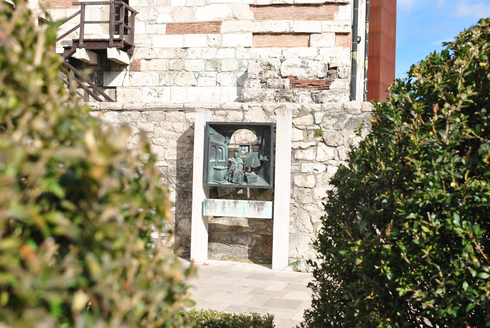
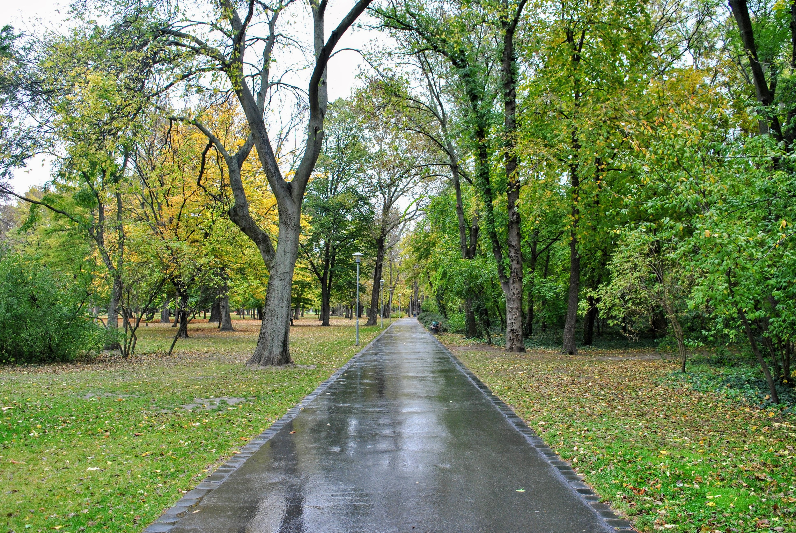
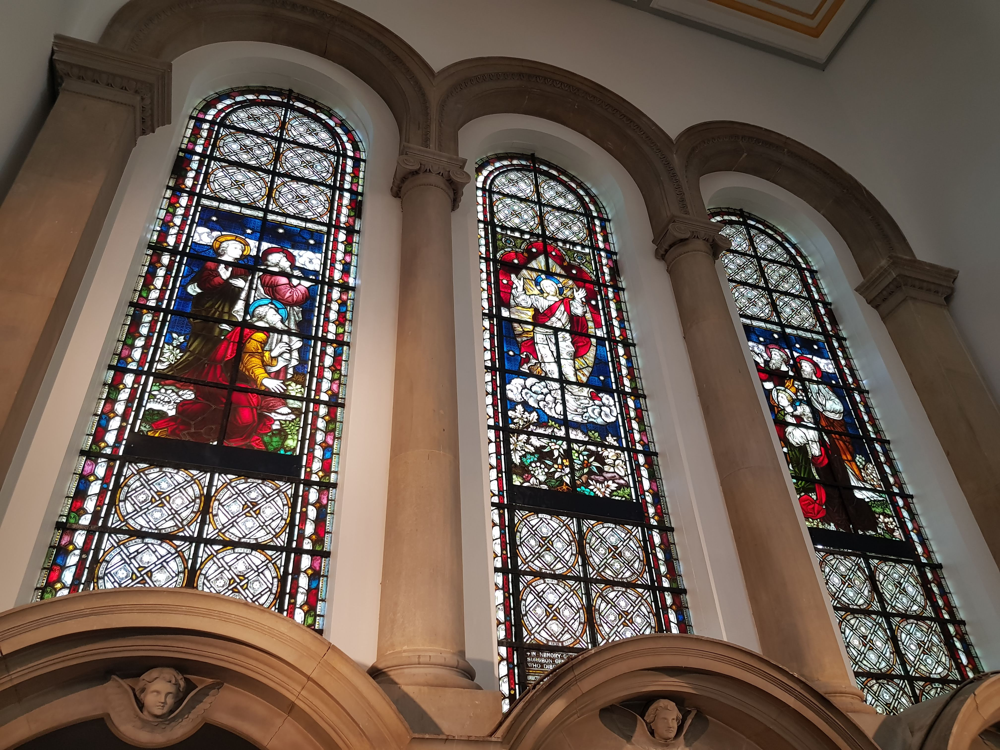
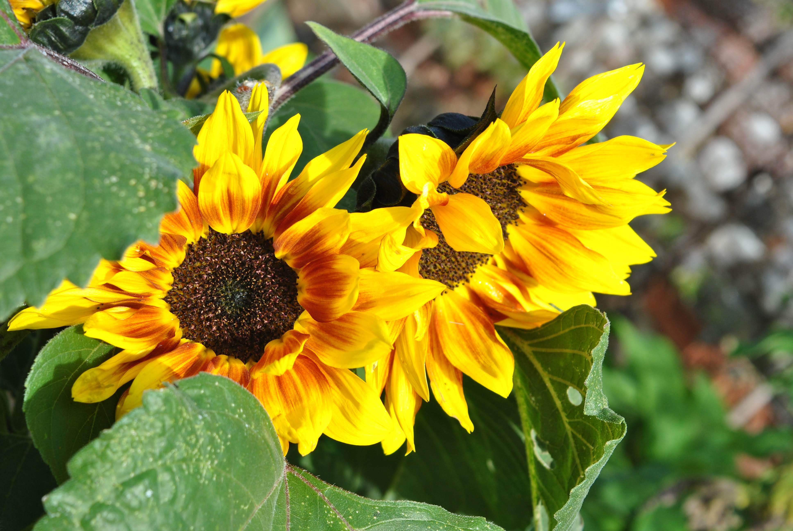
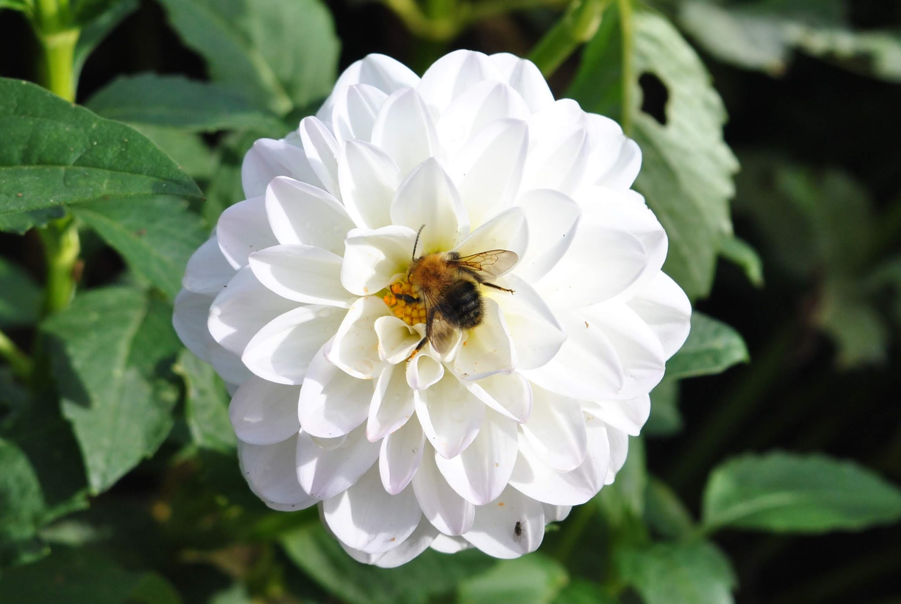
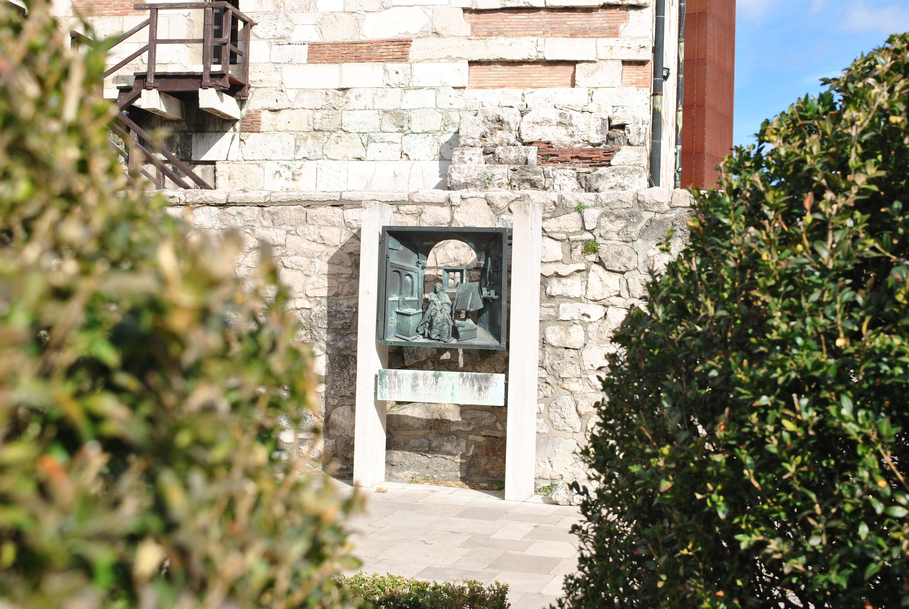
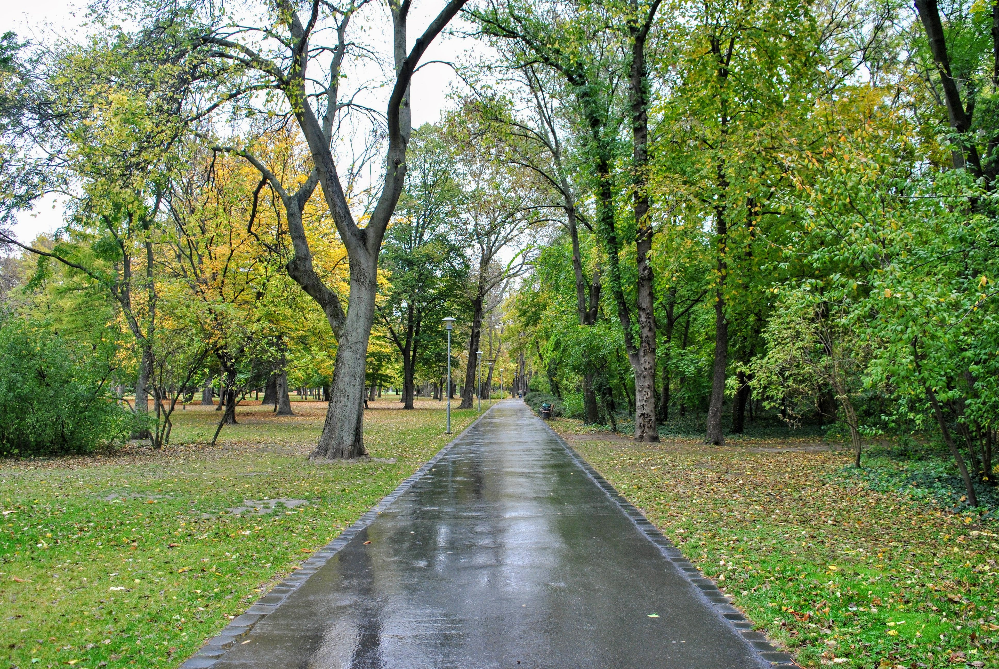
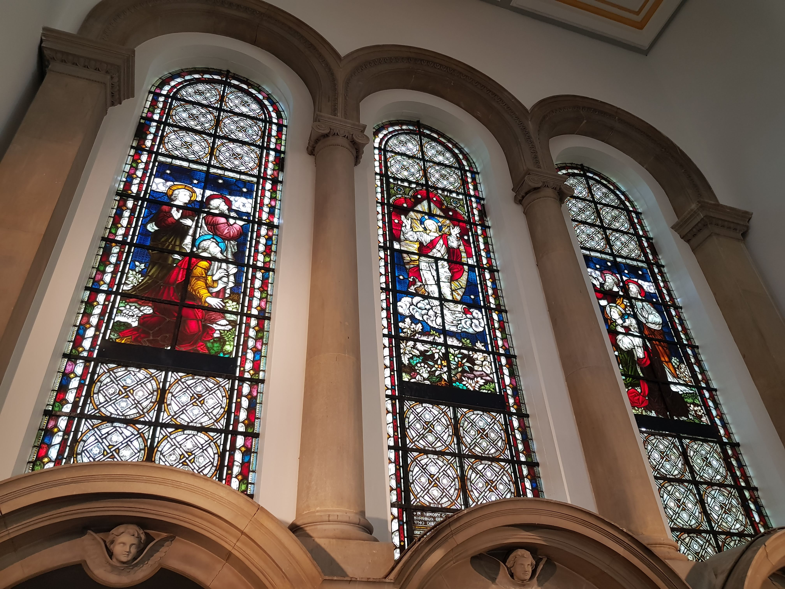
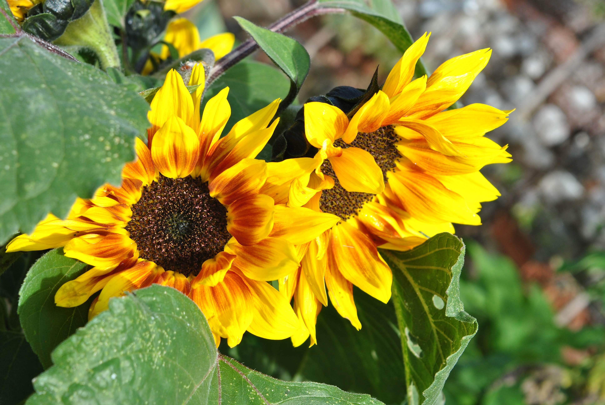
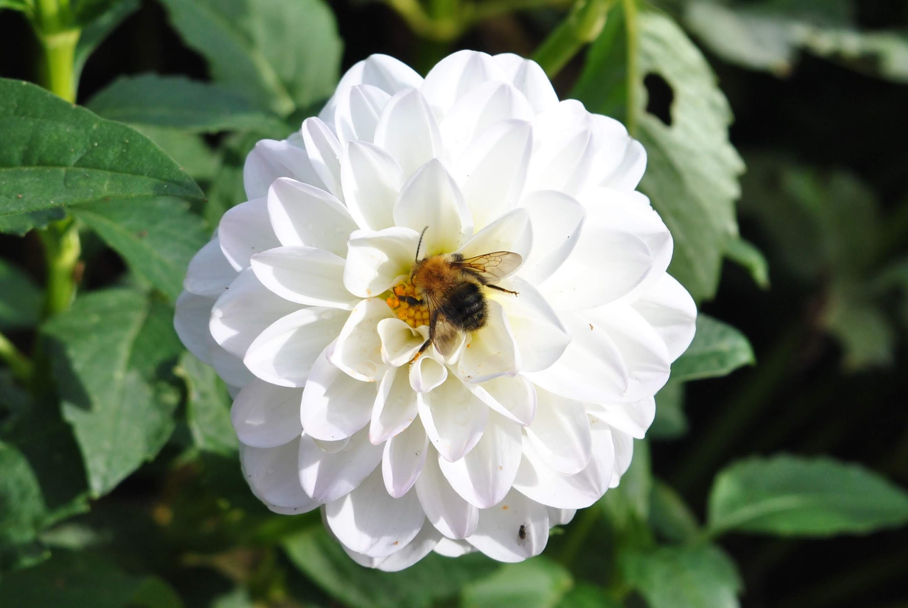
Welcome to my webpage, I hope you find it informative and fully functional!
I've worked in my current position for three years now, and have taken on every responsibility in my reach. I want to take this opportunity to learn something new. I attended the Salesforce convention in 2018 and found it to be both interesting and inspiring. I have been involved with the Voyager program, from refinement sessions through to User Acceptance Testing and supporting on release night.
I'm a keen amateur photographer and very much enjoy taking pictures when away on trips, although I have a track record for leaving the battery at home on charge! Please see below some photos that I took in 2018:
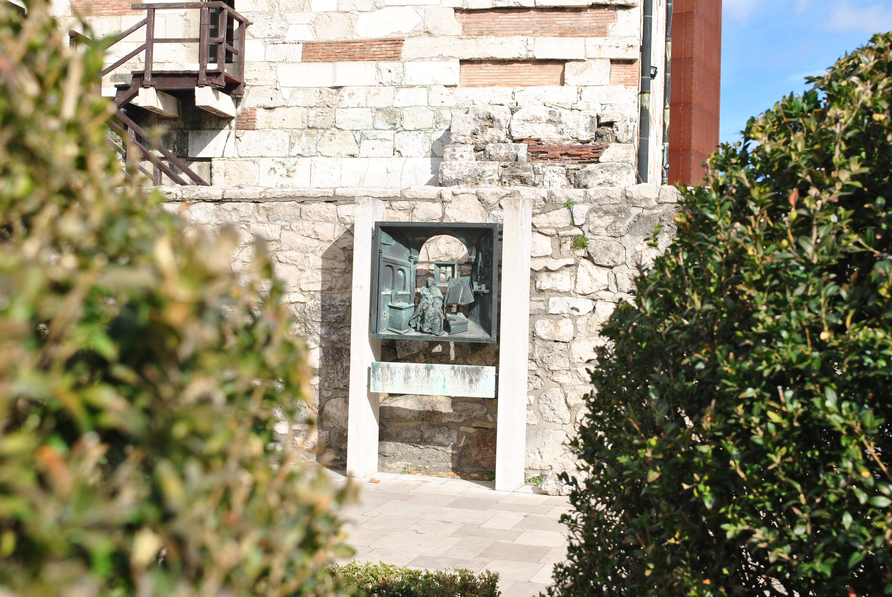
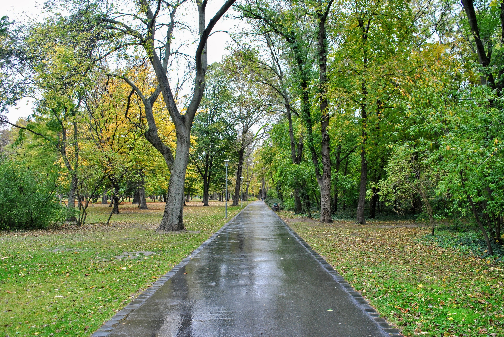
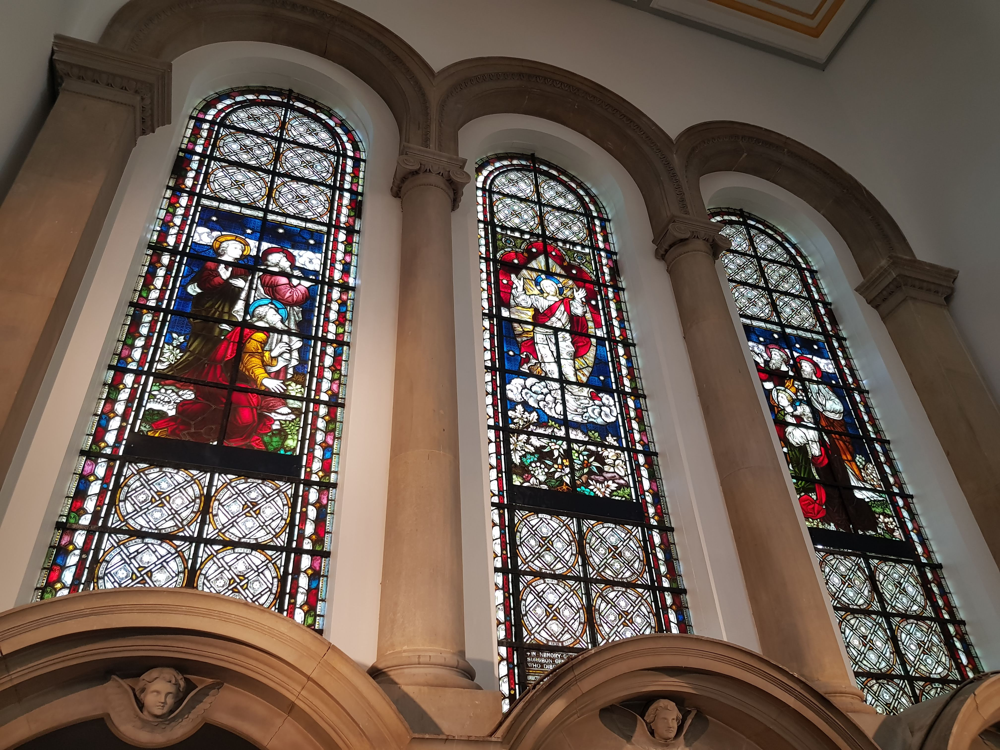
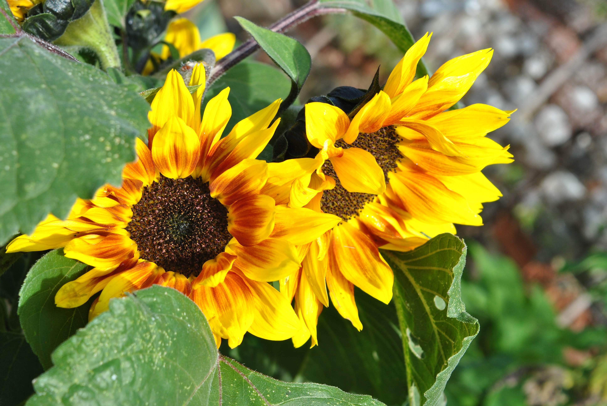
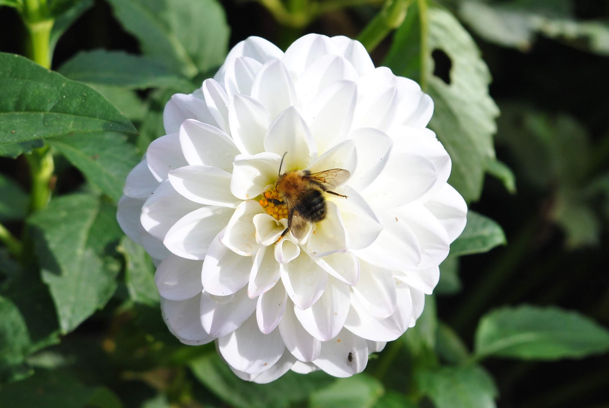
See right a picture of my bike, click it to head to the BHF website!
I enjoy cycling in my spare time with family and friends, and have ridden the BHF London to Brighton sponsored cycle twice. I haven't spent much time on the saddle in the past few months, but anticipate many more rides as the weather picks up, even if that is to the local pub! The London to Brighton cycle ride is 54 Miles in total and includes climbing the Ditchling Beacon. See below some stats regarding this famous hill climb:
- Distance: 0.9 miles / 1.45 km
- Height gain: 143m
- Average gradient: 9%
- Max gradient: 16%
I very much enjoy listening to music when I can, and think that Spotify is excellent, although I find now that I don't know the name of artists that I listen to regularly! I have recently started listening to podcasts, and discovered 'Hip-hop saved my life' which is hosted by Romesh Ranganathan and combines both comedy and Hip-hop! See below some artists that I appreciate:
- Floating Point
- Flight Facilities
- Chemical Brothers
- alt-J
- Chance the Rapper
Thank you for your time, if you have any questions or feedback, please do email me.
You can download my CV here.